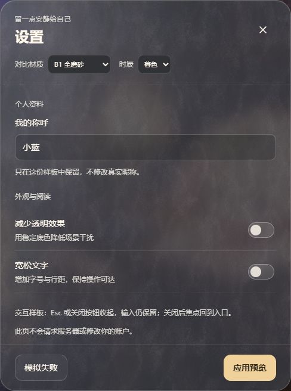
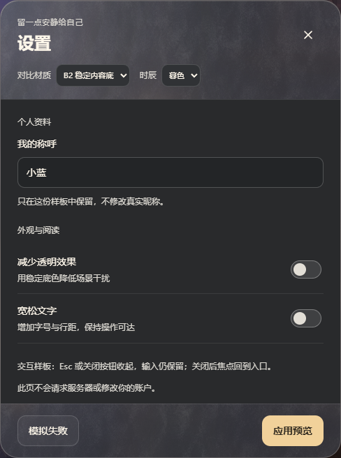

CINNAGLASS / M1 材质提案 · 待确认
只看虚线框：正文要不要继续透出纹理？
左右使用相同尺寸、场景、控件和文字。标题、页脚与反光边缘共用同一套磨砂外壳。
正常使用位置的实际截图。虚线仅用于标注差异，不属于 UI。
B1 · 整块磨砂玻璃
正文仍有纹理和透景，整窗的材质连成一片。

B2 · 磨砂外壳 + 稳定正文
正文铺均匀实底，磨砂保留在标题和页脚。

B1 的取舍：整体玻璃感更强；正文也会受到纹理与场景明暗干扰。
B2 的取舍：阅读底更稳定；上下磨砂与中间实底会有明显分区。